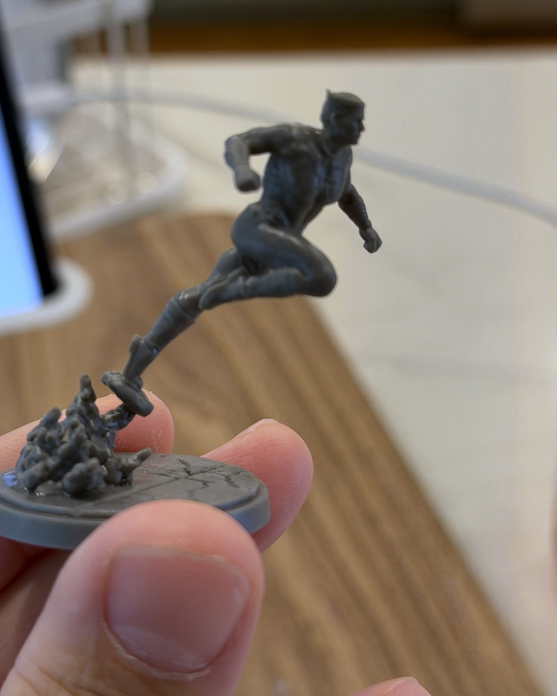
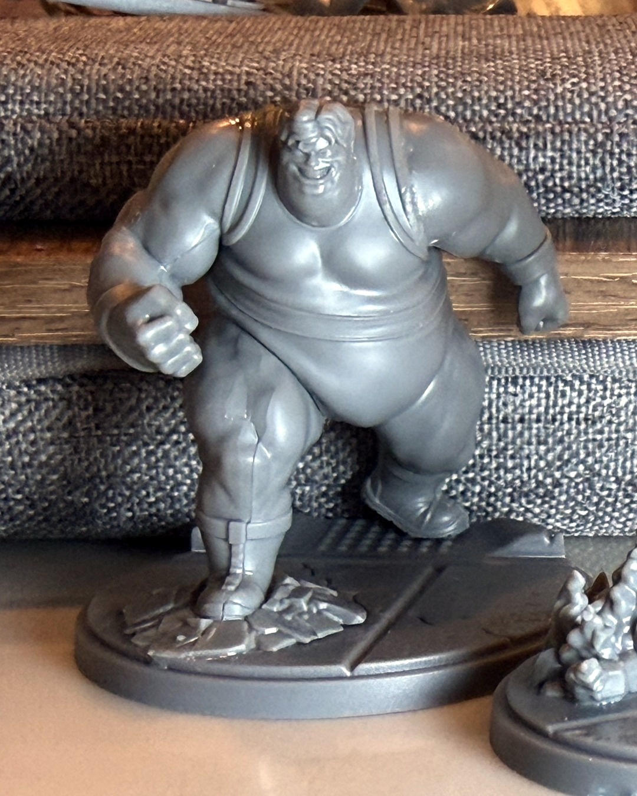
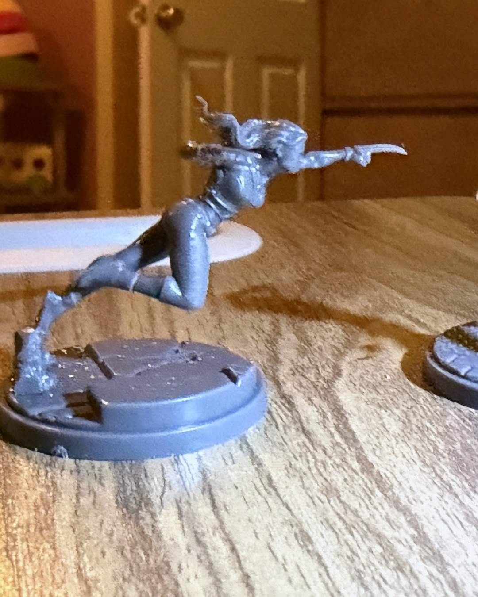
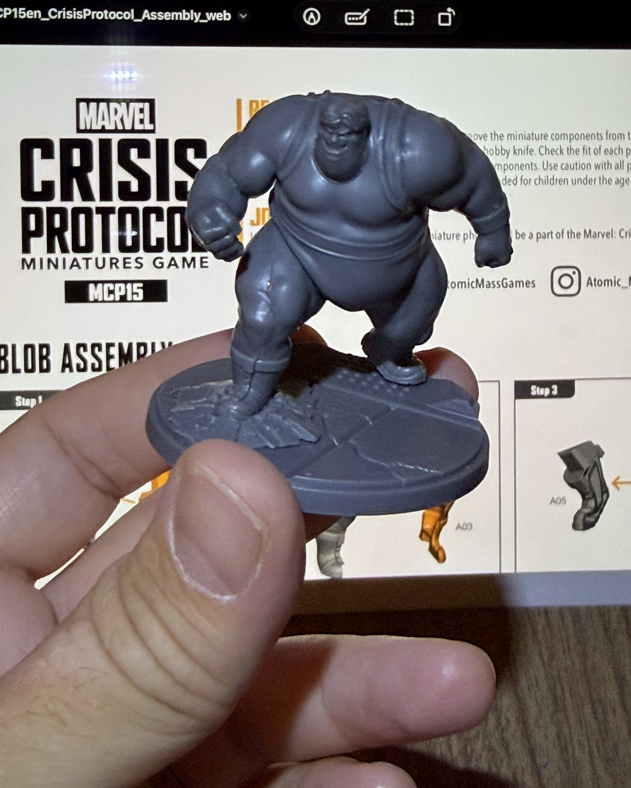

Building the Brotherhood and X-Force
Quicksilver doesn't stand still, so why should his mini? ⚡
Two new Marvel: Crisis Protocol boxes landed on my desk: Members of the Brotherhood, and the X-Force pack. Before any paint goes on, the build gets its own moment. Blob, Quicksilver, X-23 and Honey Badger are assembled. Pyro and Scarlet Witch are next.
I got into this hobby through Marvel United, where it's paint what you get: one-piece minis, prime, go. Crisis Protocol asks a little more. You clip the parts, clean the mold lines, dry fit, glue, and check the assembly guide one more time. The payoff is poses like these. Quicksilver is balanced on one toe with a spray of debris behind him, Blob is planted on cracked pavement grinning like he's already won, and X-23 is launching claws-first off her base.
I've started to enjoy the build as much as the painting. It's where you first get to know a sculpt, and it makes me want to do these guys justice when the brushes come out.
Next up: primer.
Want to build them yourself? Links in bio. They're affiliate links, so using them supports me 🙌
@atomicmassgames
#MarvelCrisisProtocol #PaintCrisisProtocol #miniaturepainting #XMen #hobbyprocess
Threads caption
Built two new Marvel: Crisis Protocol boxes this week: the Brotherhood (Blob and Quicksilver done, Pyro and Scarlet Witch next) plus X-23 and Honey Badger from the X-Force pack.
Coming from Marvel United's paint-what-you-get minis, all the clipping and gluing is a step up. But look at these poses. Worth every mold line.
Want your own? These are affiliate links, so using them supports me 🙌
Brotherhood: https://link.amazon/B05JxYjaQ
X-Force: https://link.amazon/B02RH6Z6V
TikTok caption
Build day for the Brotherhood and X-Force ⚡
Marvel United minis are paint what you get. Crisis Protocol makes you clip, clean and glue, but you get poses like Quicksilver balanced on one toe and X-23 launching claws-first.
Starting to enjoy the build as much as the paint. Primer's next.
Links to both boxes in bio. They're affiliate links, so using them supports me 🙌
#marvelcrisisprotocol #miniaturepainting #xmen #tabletopgaming #hobbyprocess
Gear in this post
- Marvel: Crisis Protocol Members of the BrotherhoodScarlet Witch, Quicksilver, Pyro and Blob
- Marvel: Crisis Protocol X-Force Affiliation PackCable, Domino, X-23 and Honey Badger
Affiliate links. All gear